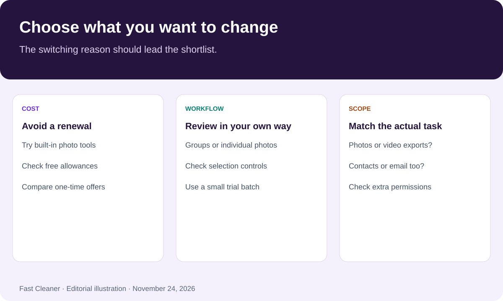
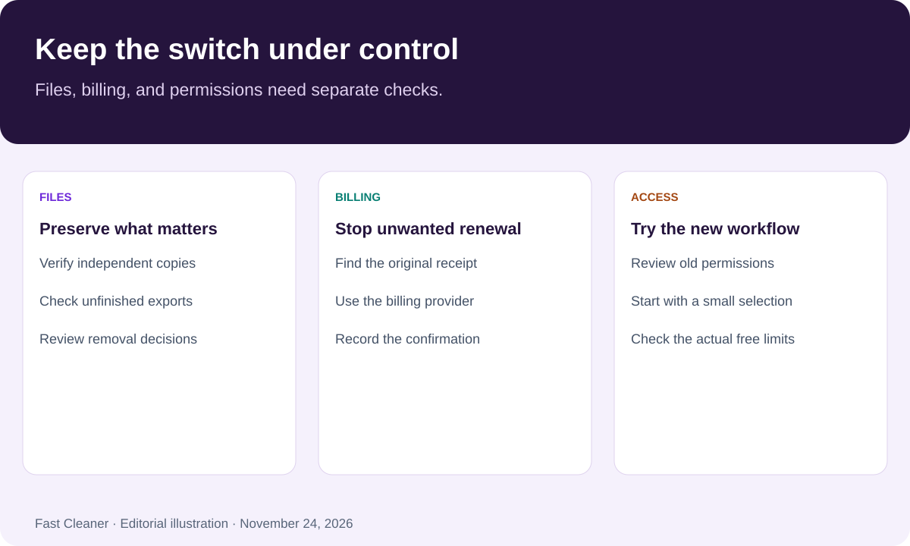

What should you switch to from Cleaner Guru?
Choose an alternative around the reason you want to switch. For identified duplicates, try Apple Photos. For a different free review interface, inspect Clever Cleaner’s allowances. For a listed lifetime purchase, compare Fast Cleaner and Clever Cleaner. For a broader toolkit, evaluate Cleanup or Cleaner Kit.
Changing apps makes sense when it fixes a specific mismatch: recurring cost, the review interface, the tools you need, or disclosures you cannot resolve. It does not automatically improve matching accuracy or reduce data collection.
Review scope: Fast Cleaner publishes this guide and develops one of the apps discussed. We reviewed published information on November 24, 2026; we have not tested these apps side by side. Free limits, purchase offers, and performance can vary by version and account.
Name the problem before choosing another app
Write down what you want to change. If it is a renewal you did not expect, handle that subscription first. If it is a photo suggestion you disagree with, check whether you can change the selection. If storage remains full, identify the largest category before trying another media scan.
Our Cleaner Guru vs Fast Cleaner comparison covers those two products in depth. This guide instead helps you choose among different workflows and payment models.


Cleaner Guru alternatives at a glance
| Alternative | Reason to evaluate it | Main limitation to check |
|---|---|---|
| Apple Photos | No separate cleaner purchase for identified duplicates | Does not replace every advertised cleanup workflow |
| Clever Cleaner | Published daily free allowances and a listed lifetime purchase | Verify the limits for your chosen action |
| Fast Cleaner | Listed monthly and lifetime iPhone purchases for media tools | Verify free limits and included features |
| Cleanup | Listed media, contacts, and email tools | Check offer, renewal, and permissions |
| Cleaner Kit by BPMobile | Another broad cleanup interface to evaluate | Confirm which actions need an upgrade |
App names are not unique. Use the linked listings: Clever Cleaner 1666645584; Fast Cleaner 6446206167; Cleanup 1510944943; Cleaner Kit by BPMobile 1194582243.
If your goal is to avoid a recurring subscription
Apple Photos is the first option to check for identified duplicates. A limited free workflow can also fit if you clean in small batches and do not need the premium tools.
The catalogs reviewed for this guide include lifetime purchases for Fast Cleaner and Clever Cleaner. Read what lifetime unlocks and whether the offer applies to your account. A larger upfront purchase is worthwhile only if you want the included tools; it is not necessary when the built-in workflow is sufficient.
Do not compare one week of a plan with the full price of a different app’s lifetime access. Use the same expected usage period. Keep the receipt and distinguish the one-time product from any recurring option shown alongside it.
If you need different tools
For media review, compare how each app shows related pictures, lets you change a selection, and handles removal confirmation. A saved edit and an original can both matter; the selected “best” picture is a suggestion.
If you want contacts or email tools as well, inspect the additional permissions in Cleanup or Cleaner Kit. If you only want a smaller video, consider Apple’s documented iMovie export workflow before buying an entire cleaner toolkit.
Our free-cleaner shortlist focuses on ongoing free use; the video guide focuses on preserving quality and originals.
Switch without losing track of files or billing
Preserve important media separately and confirm that the copies open. Finish or abandon pending exports deliberately; a new app does not know which duplicate or export you intended to retain.
- Identify the provider that billed your Cleaner Guru purchase.
- Follow that provider’s cancellation process if you want to stop renewal.
- Record the expiration or confirmation shown after cancellation.
- Review photo permissions for apps you no longer use.
- Try the alternative on a small backed-up selection before granting broader access.
Cleaner Guru’s billing terms distinguish Apple, Google, and external purchases and say deleting the app does not cancel the plan. Apple documents the iPhone subscription controls.


If privacy is the reason you want to switch
Compare the specific disclosure you want to change. Permission scope, local photo analysis, analytics, and advertising identifiers are separate concerns. A switch to another cleaner should be based on its policy and available controls, rather than a broad “private” label.
Review Cleaner Guru’s policy alongside the policy of your candidate. Fast Cleaner’s own policy describes separate limited analytics; it is not a zero-data-collection promise. This guide does not establish a security ranking.
Choose what to keep
Review the current iPhone features, privacy information, and purchase terms before installing.
Common switching questions
What is a free alternative to Cleaner Guru?
Try Apple Photos for identified duplicates. Clever Cleaner describes free allowances; verify the specific action and current limits before relying on it.
Which alternatives offer a lifetime purchase?
The reviewed Fast Cleaner and Clever Cleaner catalogs list lifetime options. Confirm the current checkout offer and included features rather than assuming every purchase is lifetime.
Will removing Cleaner Guru stop its renewal?
No. Its terms say deleting the app does not cancel the subscription. Follow the provider shown on the original receipt.
Will an alternative recover more storage?
There is no supported comparative result in this guide. Savings depend on your library, the files you remove, export choices, and what stays on the device.
Sources and review method
Published sources checked November 24, 2026. Some store responses may be cached. Product descriptions and free-limit statements are attributed to developers; no scan accuracy, recovered-storage, or comparative security result is claimed. The linked product IDs keep similarly named apps separate.
- Cleaner Guru
- Guru billing
- Guru policy
- Apple subscription cancellation
- Apple Photos
- Clever Cleaner
- Fast Cleaner
- Cleanup
- Cleaner Kit
- iMovie
Prices and eligibility can vary by storefront, account, and version. A current purchase screen is the place to confirm what you would buy. Illustrations summarize choices, not measured app results.